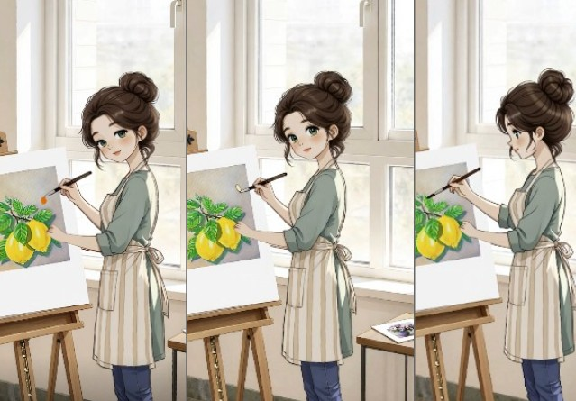

Have you ever finished a painting, stepped back, and felt like it was just... staring back at you? I recently had that feeling with a piece I did—a simple, vibrant study of lemons. I loved the texture of the acrylics, but I wanted more. I wanted the scene to breathe.
I decided to run an experiment: Can AI take a physical painting and turn it into a living story without losing its "human" heart?
Watch the Video ▶Phase 1: The Analog Foundation
Everything starts with the "real world." No prompts, no sliders—just me, a brush, and some yellow paint. I filmed the process of painting those lemons, including the imperfections.
The twist? I decided that the "artist" in my final video shouldn't be me. It should be Her—a character I've been developing who lives in a cozy, storybook-like world.
Phase 2: The Struggle for Character Consistency
This is where it gets technical. If you've played with AI, you know it has "goldfish memory." It forgets faces, changes outfits, and shifts styles every five seconds.
To keep my artist looking like the same person, I had to treat my prompts like a legal contract. I found that Kling AI's "Create in Omni" mode was my best friend here. It's much better at maintaining spatial awareness and character traits.
My Consistency Checklist:
- Define the Style: "Soft illustrated style, Ghibli-inspired but realistic proportions, NOT 3D/Pixar."
- Identify Features: I describe her hair, her apron, and even the way she holds the brush every single time.
- The "Guardrail" Prompt: Using negative prompts or strict constraints to ensure she doesn't turn into a generic AI model.
Phase 3: Directing the "Literal Actor"
The funniest (and most frustrating) part of using Kling AI is how literal it is. I told the AI "She paints lemons," and it showed her painting red streaks over my yellow lemons. Why? Because the AI didn't "know" what color was on her brush.
I had to start thinking like a film director:
Instead of: "She paints."

I wrote: "Close-up, the tip of the brush dipped in yellow paint touches the canvas, creating a horizontal stroke."
Technical Tip: High Quality (HQ) Mode
When I switched to HQ Mode in Kling, the difference was night and day. In standard mode, the brush sometimes "floated" or clipped through the canvas. HQ mode added the micro-vibrations and resistance you see when a real brush hits a surface. It's worth the extra credits!
Phase 4: Healing the Footage (The "Shadow" Incident)
In my original real-life video, I accidentally cast a huge shadow over the painting with my hand. You can't just "delete" a shadow in video—the data underneath is gone.
In CapCut, I used a "surgical" approach:
- Masking: I duplicated the layer and applied a soft mask to the dark area.
- Luminance Adjustments: I boosted the shadows and mid-tones specifically within that mask.
- Keyframing: I tracked the movement of the hand so the "fix" followed the shadow.
Lesson learned: Editing isn't always about making things perfect; it's about hiding the "seams" gracefully.
The Missing Ingredient: Sound
Music is the invisible thread that holds the mood together. For this "cozy art" vibe, I avoided anything with lyrics. I looked for Lo-Fi Ambient or Soft Piano tracks that mimicked the rhythm of a heartbeat.
Pro Tip: If you're looking for safe, copyright-free tracks, check out the YouTube Audio Library or Epidemic Sound. A bad music choice can turn a magical moment into a boring one.
Final Thoughts: AI is a Brush, Not a Replacement
This project taught me that AI isn't here to replace the artist. It's an extension of our reach. My lemons stayed real. My brushstrokes stayed mine. But suddenly, they had a voice.
If you're an artist: don't fear the tech. Use it. Break it. Argue with it. Make it work for you. Because the most beautiful art happens right where the physical world meets the digital one.
Try Kling AI →